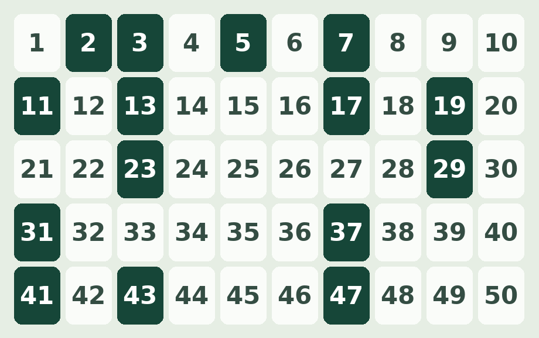

গণিত · ইতিহাস ও প্রয়োগ
সংখ্যাতত্ত্বের ইতিহাস: মৌলিক সংখ্যা থেকে ডিজিটাল স্বাক্ষর
বিজ্ঞান জিজ্ঞাসা · ২৪ নভেম্বর ২০২৬
রাত ১০টার তিন ঘণ্টা পর ঘড়িতে ১টা বাজে। কারণ ১০ আর ৩ যোগ করলে ১৩ হয়, আর ১৩-কে ১২ দিয়ে ভাগ করলে ভাগশেষ থাকে ১। এই পরিচিত হিসাব থেকেই সংখ্যাতত্ত্বের একটি বড় ধারণায় পৌঁছানো যায়। একই ভাগশেষ দেওয়া সংখ্যাগুলোকে এক দলে রাখলে ক্যালেন্ডারের হিসাব থেকে শুরু করে ডিজিটাল স্বাক্ষর পর্যন্ত নানা সমস্যার গঠন বোঝা যায়।
পূর্ণসংখ্যা নিয়ে এত প্রশ্ন কেন?
সংখ্যাতত্ত্বে পূর্ণসংখ্যার বিভাজ্যতা, মৌলিক সংখ্যা এবং পূর্ণসংখ্যা বা মূলদ সংখ্যায় সমীকরণের সমাধান নিয়ে প্রশ্ন করা হয়। ১-এর চেয়ে বড় যে পূর্ণসংখ্যার ধনাত্মক ভাজক কেবল ১ ও সংখ্যাটি নিজে, তাকে মৌলিক সংখ্যা বলে। যেমন ২, ৩, ৫ ও ৭। ৮৪-কে ২ × ২ × ৩ × ৭ হিসেবে ভাঙা যায়। গুণনীয়কের ক্রম বদলানো ছাড়া এই মৌলিক বিশ্লেষণ একটিই। তাই মৌলিক সংখ্যাগুলো জানলে ধনাত্মক পূর্ণসংখ্যার গুণের কাঠামো বোঝা যায়। [১, ৩]

ব্যাবিলনের মাটির ফলক থেকে ইউক্লিডের প্রমাণ
প্রাচীন ব্যাবিলনের মাটির ফলক প্লিম্পটন ৩২২-এ এমন সংখ্যার সারণি আছে, যার সঙ্গে পিথাগোরীয় ত্রয়ীর সম্পর্ক পাওয়া যায়। ৩, ৪ ও ৫ দিয়ে ধারণাটি বোঝা যায়: ৩² + ৪² = ৫²। ফলকটি কী কাজে ব্যবহৃত হতো, তা নিয়ে একাধিক ব্যাখ্যা আছে। খ্রিষ্টপূর্ব প্রায় ৩০০ সালের ইউক্লিডের এলিমেন্টস-এর সপ্তম থেকে নবম খণ্ডে বিভাজ্যতা ও মৌলিক সংখ্যার পদ্ধতিগত আলোচনা দেখা যায়। [১–৩]


ইউক্লিডের একটি যুক্তি আজও হাতে-কলমে বোঝা যায়। ধরুন, মৌলিক সংখ্যার একটি সসীম তালিকা লিখলেন। তালিকার সব সংখ্যা গুণ করে তার সঙ্গে ১ যোগ করুন। নতুন সংখ্যাটিকে তালিকার যেকোনো মৌলিক সংখ্যা দিয়ে ভাগ করলে ১ অবশিষ্ট থাকবে। অথচ ১-এর চেয়ে বড় এই সংখ্যাটির অন্তত একটি মৌলিক ভাজক আছে। সেই ভাজকটি তালিকার বাইরে। ফলে কোনো সসীম তালিকাতেই সব মৌলিক সংখ্যা ধরা যায় না। [৩]
ভারত, চীন ও আলেকজান্দ্রিয়ার সমীকরণ
আলেকজান্দ্রিয়ার ডায়োফ্যান্টাস তাঁর অ্যারিথমেটিকা-য় নানা সমীকরণের মূলদ সমাধান খুঁজেছিলেন। পরে তাঁর নামেই পূর্ণসংখ্যার সমাধান খোঁজার বহু সমস্যা ‘ডায়োফ্যান্টাইন সমীকরণ’ নামে পরিচিত হয়। ভারতে আর্যভটের কুট্টক পদ্ধতি দিয়ে কিছু রৈখিক সমীকরণের পূর্ণসংখ্যা সমাধান বের করা যেত। সপ্তম শতকে ব্রহ্মগুপ্ত এমন সমীকরণও নিয়ে কাজ করেন, যেখানে দুটি চলকের বর্গ আসে। [১, ৪, ৫]
চীনা গণিতগ্রন্থ সুনজি সুয়ানজিং-এ প্রশ্নটি ভাগশেষ নিয়ে: কোনো সংখ্যা ৩, ৫ ও ৭ দিয়ে ভাগ করলে যথাক্রমে ২, ৩ ও ২ থাকে। ক্ষুদ্রতম ধনাত্মক উত্তর ২৩। এরপর ১০৫ যোগ করলেই আরেকটি উত্তর, কারণ ১০৫ তিনটি ভাজকেরই গুণিতক। আধুনিক চীনা ভাগশেষ উপপাদ্য বলে, ভাজকগুলো জোড়ায় জোড়ায় পরস্পর সহমৌলিক হলে এমন শর্তগুলোর একটি যৌথ সমাধান থাকে এবং তাদের গুণফলের ব্যবধানে সব সমাধান পাওয়া যায়। [৬]
গাউস, রিম্যান ও রামানুজন
১৮০১ সালে কার্ল ফ্রিডরিখ গাউসের ডিসকুইজিশিওনেস অ্যারিথমেটিকে প্রকাশিত হয়। একই ভাগশেষ দেওয়ার সম্পর্ককে তিনি পদ্ধতিগতভাবে ব্যবহার করেন। আজ আমরা লিখি 13 ≡ 1 (mod 12)। কারণ ১৩ ও ১-এর পার্থক্য ১২ দিয়ে নিঃশেষে বিভাজ্য। এই ভাষা দিয়ে অসংখ্য পূর্ণসংখ্যাকে কয়েকটি ভাগশেষের শ্রেণিতে সাজিয়ে হিসাব করা যায়। [৭]
মৌলিক সংখ্যার তালিকায় পরপর দুটি সংখ্যার ফাঁক ওঠানামা করে। তবু অনেক দূর পর্যন্ত গুনলে একটি নিয়ম ধরা পড়ে। মৌলিক সংখ্যা উপপাদ্য অনুযায়ী, বড় x পর্যন্ত মৌলিক সংখ্যার গণনা প্রায় x / ln(x)। ১৮৫৯ সালে বার্নহার্ড রিম্যান মৌলিক সংখ্যার বণ্টনের সঙ্গে জিটা ফাংশনের সম্পর্ক দেখান। তাঁর অমীমাংসিত অনুমানটির সত্যতা নির্ধারণ করা গেলে, এই গড় প্রবণতা থেকে মৌলিক সংখ্যার গণনা কতটা বিচ্যুত হয়, সে বিষয়ে আরও নির্ভুল ধারণা পাওয়া যাবে। [৮]


শ্রীনিবাস রামানুজন আরেক ধরনের গণনা নিয়ে কাজ করেন। ক্রম উপেক্ষা করে ৪-কে পাঁচভাবে ধনাত্মক পূর্ণসংখ্যার যোগফল হিসেবে লেখা যায়: ৪, ৩ + ১, ২ + ২, ২ + ১ + ১, এবং ১ + ১ + ১ + ১। একে সংখ্যার পার্টিশন বলে। জি. এইচ. হার্ডি ও রামানুজন দেখান, খুব বড় সংখ্যার জন্য এই গণনা কী হারে বাড়ে, তার একটি সূত্র পাওয়া যায়। [৯]
ফার্মার দাবির সঙ্গে বক্ররেখার যোগ
৩² + ৪² = ৫² সম্ভব। কিন্তু পূর্ণসংখ্যা ঘাত ২-এর চেয়ে বড় হলে একই ধরনের সমীকরণে তিনটি ধনাত্মক পূর্ণসংখ্যা পাওয়া যাবে কি? পিয়ের দ্য ফার্মার দাবি ছিল, পাওয়া যাবে না। তিন শতাব্দীরও বেশি সময় পরে অ্যান্ড্রু ওয়াইলস ও রিচার্ড টেলরের কাজের মাধ্যমে প্রমাণটি সম্পূর্ণ হয়, এবং সংশ্লিষ্ট দুটি গবেষণাপত্র ১৯৯৫ সালে প্রকাশিত হয়। যুক্তির কেন্দ্রে ছিল উপবৃত্তীয় বক্ররেখা ও মডুলার ফর্মের মধ্যে গভীর সম্পর্ক। একটি সহজে বলা যায় এমন সমীকরণের উত্তর মিলল গণিতের আপাতদৃষ্টিতে দূরের দুটি ক্ষেত্রকে জুড়ে দিয়ে। [১০]
ডিজিটাল স্বাক্ষর ও কিউআর কোডে সংখ্যাতত্ত্ব
ডিজিটাল স্বাক্ষর। দুটি বড় মৌলিক সংখ্যা গুণ করা তুলনামূলক সহজ। উপযুক্ত আকারের দুটি মৌলিক সংখ্যার গুণফল দেওয়া থাকলে সেই গুণনীয়ক দুটি বের করা পরিচিত ধ্রুপদি পদ্ধতিতে কঠিন। এই অসমতা আরএসএর পেছনের একটি ধারণা। আরএসএর মতো পদ্ধতিতে ভাগশেষের পাটিগণিত ব্যবহার করে এমন ডিজিটাল স্বাক্ষর তৈরি করা যায়, যা প্রকাশ্য চাবি দিয়ে যাচাই করা যায়। বাস্তব নিরাপত্তা ব্যবহৃত পদ্ধতি ও তার সঠিক বাস্তবায়নের ওপরও নির্ভর করে। [১১]
কিউআর কোড। কোডের কিছু অংশ ময়লা বা ক্ষতিগ্রস্ত হলেও ফোন কখনো তথ্য উদ্ধার করতে পারে। কারণ মূল তথ্যের সঙ্গে রিড–সলোমন কোড বাড়তি তথ্য যোগ করে। এর গণিত চলে এমন একটি সসীম সংখ্যাব্যবস্থায়, যেখানে যোগ, বিয়োগ, গুণ এবং শূন্য ছাড়া অন্য সংখ্যা দিয়ে ভাগ করা যায়। ক্ষতি নির্দিষ্ট সীমার মধ্যে থাকলে বাড়তি তথ্য দিয়ে মূল বার্তাটি পুনর্গঠন করা সম্ভব। [১২]
নিজে চেষ্টা করে দেখুন
একটি সংখ্যা ৫ দিয়ে ভাগ করলে ২ থাকে এবং ৭ দিয়ে ভাগ করলে ৩ থাকে। ক্ষুদ্রতম ধনাত্মক সংখ্যাটি কত?
উত্তর দেখুন
৫ দিয়ে ভাগ করলে ২ থাকে এমন সংখ্যাগুলো ২, ৭, ১২, ১৭, …। এদের মধ্যে প্রথম ১৭-কে ৭ দিয়ে ভাগ করলে ৩ থাকে। পরের উত্তর ৫২, কারণ ১৭-এর সঙ্গে ৫ × ৭ যোগ করলে কোনো ভাগশেষই বদলায় না।
তথ্যসূত্র ও আরও পড়ুন
- Wikipedia · Number theory
- Smithsonian · Plimpton 322 replica and historical context
- Euclid, Elements IX.20 · D. E. Joyce, Clark University
- MacTutor · Aryabhata
- MacTutor · Brahmagupta
- MacTutor · Sun Zi
- MacTutor · Carl Friedrich Gauss
- Clay Mathematics Institute · Riemann Hypothesis
- MacTutor · Srinivasa Ramanujan
- Annals of Mathematics · 1995 papers by Wiles and Taylor–Wiles
- RFC 8017 · PKCS #1 RSA Cryptography Specifications
- DENSO WAVE · QR Code Error Correction